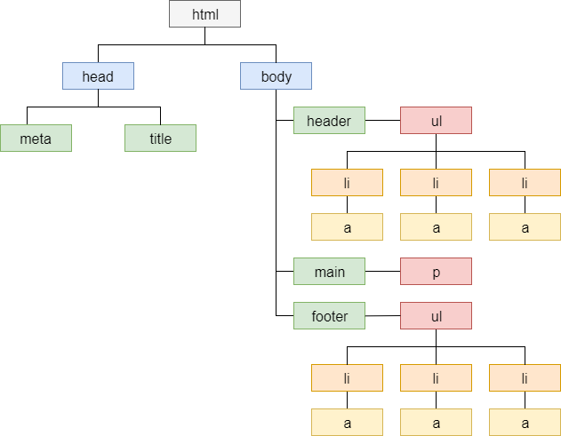
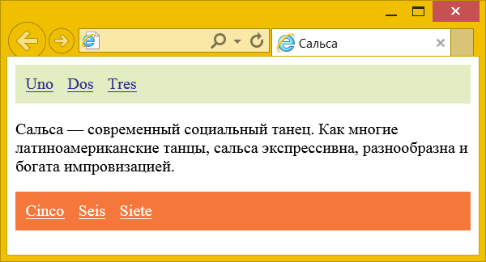
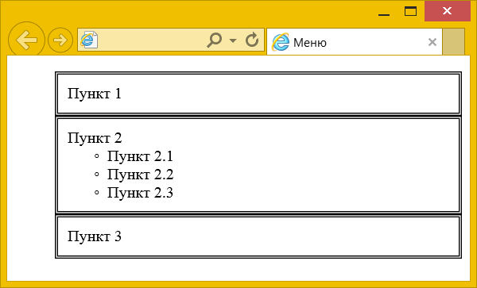
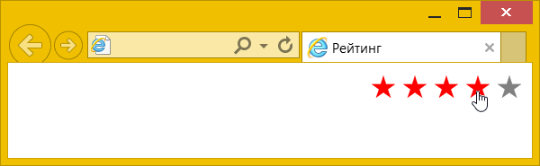

Разные селекторы можно комбинировать между собой, что в итоге позволяет нам сократить код и нацелить стиль на выбранные элементы, основываясь на их положении относительно друг друга.
Группирование селекторов (А, B)
Группирование применяет один и тот же стиль сразу к нескольким селекторам. Это делается для удобства представления и сокращения кода CSS. В примере 1 показана обычная запись, здесь для каждого селектора приводится свой набор стилевых свойств.
Пример 1. Стиль для каждого селектора
h1 {
font-family: Arial, Helvetica, sans-serif;
font-size: 1.6rem;
color: #003;
}
h2 {
font-family: Arial, Helvetica, sans-serif;
font-size: 1.3rem;
color: #333;
}
h3 {
font-family: Arial, Helvetica, sans-serif;
font-size: 1.2rem;
color: #900;
}
p {
font-family: Times, serif;
}Из данного примера видно, что стиль для элементов <h1>, <h2>, <h3> содержит одинаковое значение font-family. Группирование как раз и позволяет установить одно свойство сразу для нескольких селекторов, как показано в примере 2.
Пример 2. Сгруппированные селекторы
h1, h2, h3 {
font-family: Arial, Helvetica, sans-serif;
}
h1 {
font-size: 1.6rem;
color: #003;
}
h2 {
font-size: 1.3rem;
color: #333;
}
h3 {
font-size: 1.2rem;
color: #900;
}В данном примере единое для всех селекторов свойство font-family применяется сразу к нескольким селекторам, а отдельные свойства уже добавляются к каждому селектору отдельно.
Селекторы группируются в виде списка, пункты которого разделяются между собой запятыми. В группу могут входить не только селекторы элементов, но также идентификаторы и классы.
h2, .block, .msg { background: #fff; }Здесь свойство background применяется одновременно к элементу <h2> и к классам block и msg.
Дерево документа
Большинство комбинаций селекторов основано на их положении в дереве документа и относительно друг друга. Дерево документа — это схематичное изображение всех элементов, встречающихся в нашем коде HTML. Для иллюстрации возьмём произвольный документ, показанный в примере 3.
Пример 3. Код HTML
<!DOCTYPE html>
<html>
<head>
<meta charset="utf-8">
<title>Сальса</title>
</head>
<body>
<header>
<h1>Сальса</h1>
<ul>
<li><a href="#">Uno</a></li>
<li><a href="#">Dos</a></li>
<li><a href="#">Tres</a></li>
</ul>
</header>
<main>
<p>Сальса — современный социальный танец. Как многие
латиноамериканские танцы, сальса экспрессивна,
разнообразна и богата импровизацией.</p>
</main>
<footer>
<ul>
<li><a href="#">Cinco</a></li>
<li><a href="#">Seis</a></li>
<li><a href="#">Siete</a></li>
</ul>
</footer>
</body>
</html>Дерево документа для этого HTML показано на рис. 1. Схема напоминает крону дерева из-за своей схожести с ветвями и листьями.

Рис. 1. Дерево документа
<!doctype> не считается элементом, поэтому его в расчёт не берём. Сама схема начинается с элемента <html>, он называется «корневой элемент». Все элементы связаны друг с другом сверху вниз и между ними есть следующие связи.
- Предок
- Элемент, внутри которого располагаются другие элементы с произвольным уровнем вложения. Для <p> предками будут <main>, <body> и <html>.
- Потомок
- Элемент, расположенный внутри одного или нескольких предков. К примеру, <a> является потомком как <li>, так и <ul>, поскольку располагается внутри них.
- Родитель
- Непосредственный предок элемента, который располагается выше на один уровень в дереве документа. <header> будет родителем для <ul>, но уже не для <li>, для него родителем будет выступать <ul>.
- Ребёнок (дочерний элемент)
- Непосредственный потомок элемента, который располагается ниже на один уровень в дереве документа. К примеру, дочерним для <main> будет элемент <p>; для <ul> дочерними элементами выступают <li>, но не <a>. У родителя может быть произвольное число дочерних элементов, но у дочернего элемента только единственный родитель.
- Братья (сиблинги)
- Элементы, расположенные на одной ветке и имеющие общего родителя, называются братскими или сиблинги, если пользоваться термином из генетики. Братскими являются элементы <header>, <main> и <footer>, а также <li>. Элементы <a> братскими не являются из-за того, что у них разные родители.
- Смежные
- Братские элементы, расположенные рядом друг с другом. Смежными будут элементы <header> и <main>, а также <main> и <footer>, но никак не <header> и <footer>, потому что они располагаются «через одного».
Селекторы потомка (A B)
Эти селекторы также называются вложенными или контекстными. Такие селекторы состоят из базовых селекторов разделённых пробелом.
footer a { color: #fff; }Такую запись удобнее читать справа налево: стиль применяется к элементу <a>, который является потомком элемента <footer>. В примере 4 показано изменение цвета ссылок, в зависимости от того, где они располагаются — вверху или внизу.
Пример 4. Цвет ссылок
<!DOCTYPE html>
<html>
<head>
<meta charset="utf-8">
<title>Сальса</title>
<style>
header {
background: #e2edc1;
}
footer {
background: #f4783b;
}
ul {
margin: 0; padding: 10px;
}
li { display: inline; margin-right: 10px; }
header a {
color: #333391;
}
footer a {
color: #fff;
}
</style>
</head>
<body>
<header>
<ul>
<li><a href="#">Uno</a></li>
<li><a href="#">Dos</a></li>
<li><a href="#">Tres</a></li>
</ul>
</header>
<main>
<p>Сальса — современный социальный танец. Как многие
латиноамериканские танцы, сальса экспрессивна,
разнообразна и богата импровизацией.</p>
</main>
<footer>
<ul>
<li><a href="#">Cinco</a></li>
<li><a href="#">Seis</a></li>
<li><a href="#">Siete</a></li>
</ul>
</footer>
</body>
</html>Результат данного примера показан на рис. 2. Для изменения цвета ссылок вверху мы использовали селектор header a, а для ссылок внизу — footer a.

Рис. 2. Ссылки разного цвета
Селекторов не обязательно должно быть только два, можно комбинировать произвольное количество.
.tbl thead td { background: #f0f0f0; }Здесь серый фон добавляется к ячейкам таблицы <td> когда они располагаются внутри <thead>, а тот в свою очередь внутри элемента с классом tbl.
Дочерние селекторы (A > B)
Селекторы потомка выбирают всех заданных потомков указанного элемента, независимо от их уровня вложенности. Чтобы выбрать только дочерние элементы, между селекторами вставляется угловая скобка.
section > h2 { color: red; }Данная запись означает применить стиль к элементу <h2>, который является дочерним по отношению к <section>. Для следующего фрагмента HTML красным цветом будет оформлен первый заголовок <h2>, поскольку только он непосредственно располагается внутри <section> и выступает его дочерним элементом.
<section>
<h2>Заголовок 1</h2>
<div>
<h2>Заголовок 2</h2>
</div>
</section>Дочерние селекторы обычно применяются для ситуаций, когда одинаковые элементы вкладываются внутрь другого несколько раз, но выделить нужно не все, а только определённые элементы. В примере 5 показано создание меню, когда один <ul> располагается внутри другого. Чтобы стилизовать пункты списка первого уровня, не затрагивая остальные, и требуются дочерние селекторы.
Пример 5. Дочерние селекторы
<!DOCTYPE html>
<html>
<head>
<meta charset="utf-8">
<title>Меню</title>
<style>
.menu > li {
border: 3px double black; /* Двойная рамка */
padding: 10px; /* Поля */
list-style: none; /* Убираем маркеры */
}
</style>
</head>
<body>
<ul class="menu">
<li>Пункт 1</li>
<li>Пункт 2
<ul>
<li>Пункт 2.1</li>
<li>Пункт 2.2</li>
<li>Пункт 2.3</li>
</ul>
</li>
<li>Пункт 3</li>
</ul>
</body>
</html>Результат данного примера показан на рис. 3.

Рис. 3. Изменение стиля дочерних элементов
Смежные селекторы (A + B)
Выбирает элемент B, который является смежным для элемента A, иными словами, идёт в коде сразу же после него. К примеру, следующая запись изменит цвет только первого абзаца после заголовка.
h2 + p { color: red; }Смежные селекторы обычно применяются для стилизации полей формы или создания разных эффектов. В примере 6 текстовый абзац с классом hidden прячется с помощью свойства display со значением none. При наведении курсора мыши на абзац с классом more смежный с ним абзац с классом hidden становится виден. Подробнее об использовании :hover говорится в разделе про псевдоклассы.
Пример 6. Смежные элементы
<!DOCTYPE html>
<html>
<head>
<meta charset="utf-8">
<title>Далее</title>
<style>
.hidden {
display: none; /* Прячем элемент */
}
.more:hover + .hidden {
display: block; /* Показываем элемент */
}
</style>
</head>
<body>
<p>Глубокий белый саксаул</p>
<p class="more">Далее</p>
<p class="hidden">Производство зерна и зернобобовых
отталкивает холодный ксерофитный кустарник</p>
</body>
</html>Братские селекторы (A ~ B)
Выбирает все братские элементы B, которые идут в коде после элемента A. К примеру, следующая запись изменит цвет всех абзацев после заголовка.
h2 ~ p { color: red; }В примере 7 при наведении курсора мыши на любую звёздочку, все остальные, которые располагаются правее неё, меняют цвет с серого на красный. Поскольку братские селекторы работают только для элементов справа, а не слева от указанного, то мы идём на хитрость и переворачиваем все звёздочки с помощью атрибута dir со значением rtl. Это меняет текст и расположение элементов справа налево.
Пример 7. Братские селекторы
<!DOCTYPE html>
<html>
<head>
<meta charset="utf-8">
<title>Рейтинг</title>
<style>
.star {
color: gray; /* Серый цвет */
font-size: 24px; /* Размер звезды */
text-decoration: none; /* Убираем подчёркивание */
}
.star:hover,
.star:hover ~ .star {
color: red; /* Красный цвет */
}
</style>
</head>
<body>
<div dir="rtl">
<a href="#" class="star">★</a>
<a href="#" class="star">★</a>
<a href="#" class="star">★</a>
<a href="#" class="star">★</a>
<a href="#" class="star">★</a>
</div>
</body>
</html>Результат данного примера показан на рис. 4.

Рис. 4. Использование братского селектора
Комбинации селекторов позволяют выделить элемент, расположенный справа или внутри заданного элемента, но никак не родительский элемент или элемент, расположенный слева.